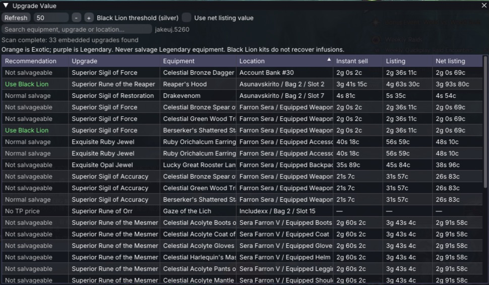
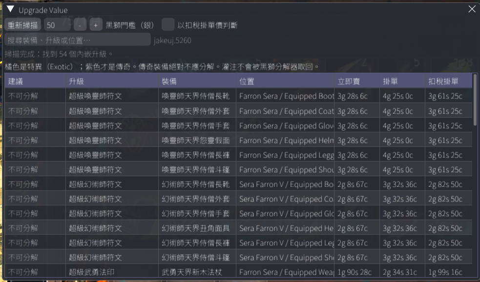
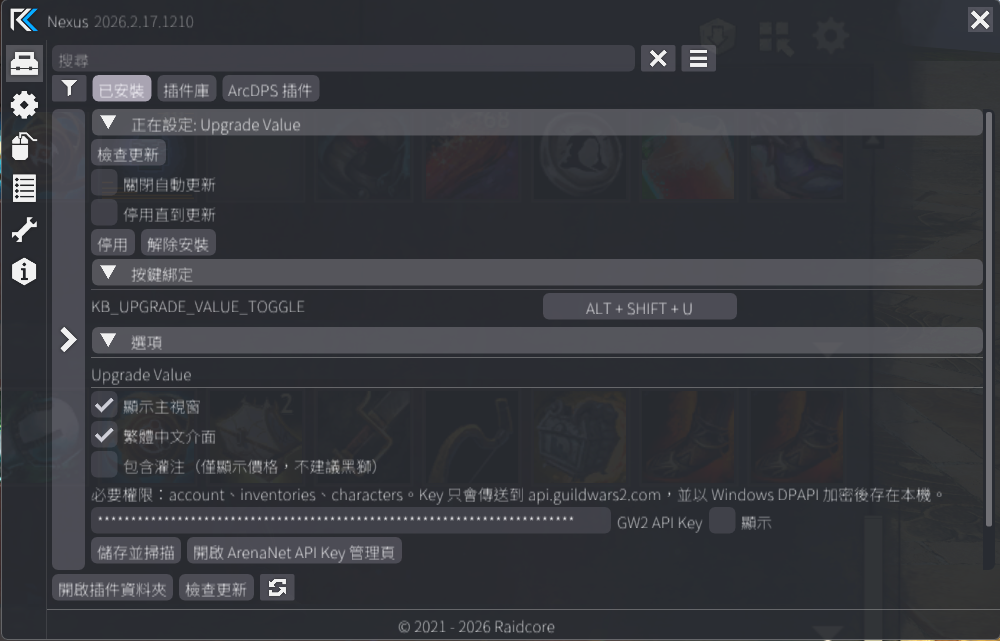
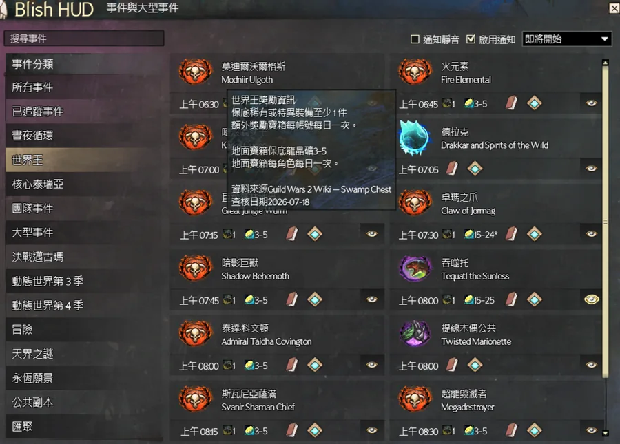

掃描整個帳號
涵蓋帳號銀行、共享物品欄、所有角色背包與目前裝備；Location 會集中角色或儲存區，各組內維持目前判斷值高價優先。
Guild Wars 2 · Nexus Addon
掃描帳號中的橘色裝備，找出內嵌符文與印記，並比較即時交易所價格。高價升級值得留給黑獅分解工具，低價升級就不必浪費次數。
Windows x64 · 社群插件 · 免費開源 · 不自動操作遊戲

Scan · Value · Decide
官方 API 負責帳號物品與交易所價格，插件只做必要的整理與判斷，不讀取不穩定的遊戲記憶體。介面預設使用英文，只有目前 Nexus 字型實際支援 CJK 時才開放繁中。
涵蓋帳號銀行、共享物品欄、所有角色背包與目前裝備；Location 會集中角色或儲存區，各組內維持目前判斷值高價優先。
同時顯示立即賣、最低掛單，以及扣除 15% 交易所費用後的實際掛單價值。
標示不可分解、無交易所價格與灌注，傳奇裝備則顯示「絕對不要分解」安全警告。
API Key 以 Windows DPAPI 加密保存，請求只傳送到 ArenaNet 官方 API。
Decision Pipeline
你可以自行設定門檻，並選擇以立即賣或扣稅掛單價判斷。插件提供資訊與建議，最後仍由你決定如何處理裝備。
Nexus Addon Library
Upgrade Value v1.0.3 已完成 Raidcore 初審，並以 Listing ID 128 公開上架 Nexus Addon Library。玩家可直接從 Nexus 遊戲內插件庫搜尋並安裝；公開上架不代表 ArenaNet 核准，也不表示本插件由 Raidcore 官方製作或發行。
穩定版 v1.0.5 可手動安裝；新安裝建議直接從遊戲內插件庫取得 · Listing ID 128。
遊戲內整合使用公開 Nexus API；帳號與價格資料只從 Guild Wars 2 官方 v2 API 讀取。
不讀寫遊戲記憶體，不含 Hook、特徵碼掃描、封包攔截、輸入模擬或遊戲操作自動化。
沒有遙測或開發者後端；API Key 以 Windows DPAPI 加密，連線目的地與儲存行為皆已公開。
Codex 曾協助專案文件與開發審查；所有輸出均由開發者檢查，並由開發者負責測試、維護與合規。
公開上架表示 Raidcore 已完成初審，不代表 ArenaNet 核准，也不表示本插件由 Raidcore 官方製作或發行。ArenaNet 表示不會審查、核准或背書個別第三方程式，使用風險由玩家自行承擔。查看 ArenaNet 第三方程式政策
English Default · Traditional Chinese Ready


First Install · Four Steps
先安裝 Raidcore Nexus，並確認能在遊戲中開啟 Nexus 設定。
啟動 Guild Wars 2，在 Nexus 內開啟 Addon Library。
找到 Upgrade Value，直接從遊戲內插件庫安裝並載入。
在插件設定貼上 Key，按「儲存並掃描」即可取得最新價格。
手動安裝備援：也可從 最新 Release 下載 DLL，放到 Guild Wars 2 的 addons 根目錄（不是 addons\Nexus），例如 F:\SteamLibrary\steamapps\common\Guild Wars 2\addons\UpgradeValue.dll。
jakeuj · GW2 Tool Suite
Blish HUD、Nexus 與 ArcDPS 各自處理不同問題，但都以繁中玩家看得懂、能驗證、可安全更新為目標。

Stable Release
新安裝建議從 Nexus 遊戲內插件庫取得；若仍使用 v1.0.2 或更舊版本，需先手動安裝本版一次，之後可由 Nexus 檢查更新。